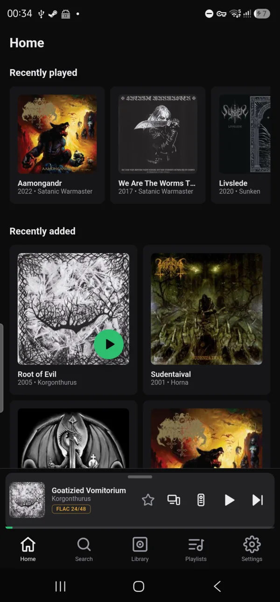

Mobil och dator
Ett bibliotek.
Två skärmar.
Inget moln.
Starta ett album på datorn, gå därifrån och tryck Play here i mobilen: samma kö, samma låt, samma sekund. Allt håller takten via en liten hubb i ditt eget hem.

Överlämning
Musiken följer dig, inte tvärtom.
- Se vad den andra spelarLåten, hur långt den kommit och vad som kommer härnäst, till och med från mobilens låsskärm.
- FjärrkontrollSpela, pausa, hoppa, spola, volym och kön på den andra enheten; det du väljer spelas där.
- En spelare i tagetStartar du musik på en enhet pausas den andra. Inga två rum som spelar samtidigt av misstag.
- Spotify ocksåÖverlämningen tar med Spotify-låtar och blandade köer, inte bara dina egna filer.
Hubben
En liten låda hemma håller dina enheter i takt.
Gerudos hubb körs på en Raspberry Pi bredvid din musikserver. Den har det som ska vara likadant överallt, och inget mer. Inget konto hos någon, inga data som lämnar ditt hem.
- Delas mellan enheterÄndringar i spellistor, blandade spellistor, fästa spellistor, ignorerade låtar, senaste sökningar, Senast spelat och Historik.
- Fungerar offlineÄndra saker utan anslutning; enheten kommer ikapp när den är tillbaka.
- Hemma och bortaEn adress hemma och en borta (till exempel via Tailscale): Gerudo provar den ena, sedan den andra.

En ny dator
Ställ in en dator genom att skanna en kod.
Installera med ett enda kommando från din egen hubb, öppna Gerudo och rikta mobilen mot koden på skärmen. Dina servrar och deras lösenord kommer fram, förseglade så att bara den datorn kan öppna dem.
- Ett kommando för att installeraDin hubb levererar signerade paket för Arch, Debian/Ubuntu och Fedora; uppdateringar kommer sedan med systemets egen uppdaterare.
- Lösenorden stannar i nyckelringenSystemets egen nyckelring på datorn, Androids nyckellager i mobilen. Aldrig i vanliga filer.
- Ta bort en enhet när som helstMobilen listar varje ansluten dator, och ett tryck stänger ute den.
Delat minne
Båda enheterna minns samma kväll.
Historik och Senast spelat kommer från alla enheter, så albumet du startade i mobilen på bussen finns där på datorn hemma, med "on phone" bredvid varje låt.

